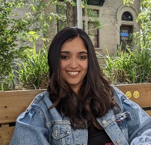

Ishita Dasgupta

Ishita is a Research Scientist at DeepMind New York City. She was previously a postdoctoral researcher at Princeton University in the Departments of Psychology and Computer Science, working in the Computational Cognitive Science Lab with Prof. Tom Griffiths. She received her PhD from the Department of Physics at Harvard University in 2020, working in the Computational Cognitive Neuroscience Lab with Prof. Sam Gershman. Her research is at the intersection of computational cognitive science and machine learning. Ishita uses advances in machine learning to build new models of human reasoning, applies cognitive science approaches toward understanding black-box AI systems, and combines these insights to build better, more human-like artificial intelligence.
Contact: idg[at]deepmind.com
Links to more information below!
Google Scholar
GitHub
LinkedIn
Resumé
Academic CV
Dissertation
Précis of thesis dissertation
Harvard Transcript
Student Feedback